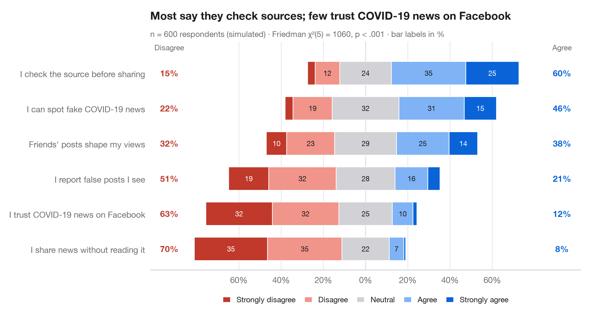

Graphique de Likert divergent
Items de Likert à cinq niveaux en barres empilées divergentes, centrées sur la réponse neutre.

L'équivalent Python de gglikert(). Chaque ligne est un item du questionnaire ; la barre est divisée en cinq niveaux de réponse et décalée de sorte que la réponse neutre soit à cheval sur zéro : le désaccord s'étend vers la gauche, l'accord vers la droite. Les items sont triés par accord total, et les colonnes latérales donnent la proportion totale de répondants en désaccord (à gauche) et en accord (à droite), ce qui permet de comparer les lignes sans lire les segments.
Les données sont une simulation à graine fixe de 600 employés répondant à six énoncés sur leur milieu de travail. Les pourcentages proviennent de pd.crosstab(normalize="index") ; le sous-titre rapporte un test de Friedman (scipy.stats.friedmanchisquare) qui vérifie si les items reçoivent la même distribution de réponses de la part des mêmes répondants.
Le code et le texte à l'intérieur des figures sont en anglais.
import matplotlib.pyplot as plt
import numpy as np
import pandas as pd
from scipy import stats
# Simulated survey: 600 respondents, 6 items, answers 1-5 driven by a shared latent mood
rng = np.random.default_rng(42)
items = {"My workload is manageable": -0.6, "I have the tools I need": 0.4,
"My manager supports me": 0.8, "I feel fairly paid": -1.0,
"I would recommend this employer": 0.2, "I see a future for myself here": -0.2}
mood = rng.normal(0, 0.8, 600)
answers = pd.DataFrame({item: np.digitize(shift + mood + rng.normal(0, 1, 600),
[-1.6, -0.5, 0.5, 1.6]) + 1
for item, shift in items.items()})
levels = ["Strongly disagree", "Disagree", "Neutral", "Agree", "Strongly agree"]
colors = ["#C0392B", "#F1948A", "#D1D1D6", "#7FB3F5", "#0A64D8"]
pct = answers.melt().pipe(lambda d: pd.crosstab(d.variable, d.value, normalize="index") * 100)
pct["agree"], pct["disagree"] = pct[4] + pct[5], pct[1] + pct[2]
pct = pct.sort_values("agree")
# Friedman test: do the six items get the same answers from the same people?
fr = stats.friedmanchisquare(*[answers[c] for c in answers])
fig, ax = plt.subplots(figsize=(9.5, 5))
y = np.arange(len(pct))
left = -(pct[1] + pct[2] + pct[3] / 2) # start so that neutral is centred on 0
for lev, (name, c) in enumerate(zip(levels, colors), start=1):
ax.barh(y, pct[lev], left=left, color=c, height=0.66, label=name, edgecolor="white", lw=0.8)
for yi, (l, w) in enumerate(zip(left, pct[lev])):
if w >= 6:
ax.text(l + w / 2, yi, f"{w:.0f}", ha="center", va="center", fontsize=8.5,
color="white" if lev in (1, 5) else "#1D1D1F")
left = left + pct[lev]
# Totals on both sides
for yi, (d, a) in enumerate(zip(pct["disagree"], pct["agree"])):
ax.text(-93, yi, f"{d:.0f}%", ha="center", va="center", fontsize=10, color="#C0392B", fontweight="semibold")
ax.text(93, yi, f"{a:.0f}%", ha="center", va="center", fontsize=10, color="#0A64D8", fontweight="semibold")
ax.text(-93, len(pct) - 0.35, "Disagree", ha="center", fontsize=9, color="#6E6E73")
ax.text(93, len(pct) - 0.35, "Agree", ha="center", fontsize=9, color="#6E6E73")
ax.axvline(0, color="#3A3A3C", lw=0.8, zorder=0)
ax.spines["left"].set_visible(False)
ax.set_yticks(y, pct.index)
ax.set_xlim(-102, 102)
ax.set_ylim(-0.6, len(pct) - 0.1)
ax.set_xticks(range(-60, 61, 20), [f"{abs(t)}%" for t in range(-60, 61, 20)])
ax.grid(axis="x"); ax.grid(axis="y", visible=False)
ax.legend(ncols=5, loc="upper center", bbox_to_anchor=(0.5, -0.08), fontsize=9,
handlelength=1, columnspacing=1.2)
ax.set_title("Staff back their managers but not their pay", pad=26)
ax.text(0, 1.02, f"n = {len(answers)} respondents (simulated) · Friedman χ²({answers.shape[1] - 1}) = "
f"{fr.statistic:.0f}, p < .001 · bar labels in %", transform=ax.transAxes,
fontsize=9.5, color="#6E6E73")
plt.show()
Les figures utilisent le style PyStatlas (facultatif) : ajoutez plt.style.use("pystatlas.mplstyle") pour obtenir exactement le même rendu.
Comment citer
PyStatlas est créé et maintenu par Thierry Warin. S'il vous a été utile dans vos travaux, merci de le citer.
Warin, T. (2026). Diverging Likert chart. In PyStatlas: The Python Gallery of Statistical Graphics. https://warint.github.io/pystatlas/proportions-surveys/likert-diverging/
@misc{warin2026statlas,
author = {Warin, Thierry},
title = {PyStatlas: The Python Gallery of Statistical Graphics},
year = {2026},
howpublished = {\url{https://warint.github.io/pystatlas/}},
note = {Source code: https://github.com/warint/pystatlas}
}Plus dans Proportions et enquêtes

Proportions empilées par groupe
Barres empilées à 100 % avec pourcentages, n par barre, test du khi-deux et V de Cramér.
ggstatsplot::ggbarstats()
Diagramme en mosaïque avec résidus de Pearson
Aires des tuiles proportionnelles aux effectifs, colorées selon les résidus de Pearson par rapport à l'indépendance.
vcd::mosaic(shade = TRUE)
Proportions avec intervalles de confiance
Diagramme en points trié des proportions par groupe, avec intervalles de confiance de Wilson à 95 %.
ggstats::stat_prop() + geom_errorbar()